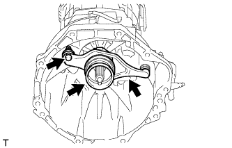
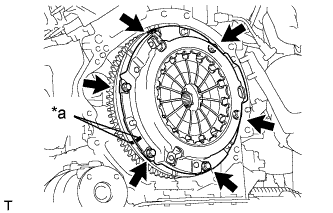

БЛОК СЦЕПЛЕНИЯ (для моделей с двигателем 1GR-FE) > СНЯТИЕ |
| 1. СНИМИТЕ МЕХАНИЧЕСКУЮ ТРАНСМИССИЮ В СБОРЕ |
Снимите механическую трансмиссию (Нажмите здесь).
| 2. СНИМИТЕ ВИЛКУ ВЫКЛЮЧЕНИЯ СЦЕПЛЕНИЯ В СБОРЕ |
|  |
Снимите вилку выключения сцепления вместе с подшипником выключения сцепления с блока трансмиссии.
Снимите опору вилки выключения сцепления с блока трансмиссии.
 |
Снимите фиксатор и подшипник выключения сцепления с вилки выключения сцепления.
| 3. СНИМИТЕ КОЖУХ СЦЕПЛЕНИЯ В СБОРЕ |
|  |
Нанесите метки на кожух сцепления и маховик.
| *a | Метка |
Ослабьте все установочные болты, поочередно выворачивая их на один оборот, пока не ослабнет натяжение пружины.
Выверните 6 установочных болтов и снимите кожух сцепления.
| 4. СНИМИТЕ ВЕДОМЫЙ ДИСК СЦЕПЛЕНИЯ В СБОРЕ |